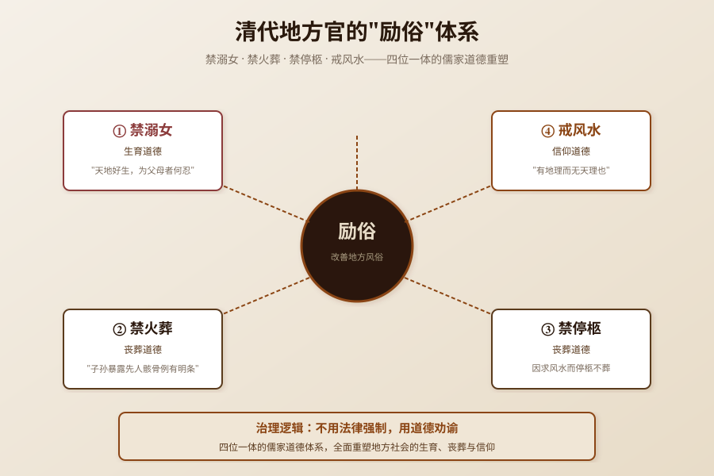

清咸丰二年，兴宁知县张鹤龄面对县内"邑人生女以溺死为得计"的陋俗，发布了一篇劝谕文——同时禁溺女、禁火葬、禁停柩、戒风水，构成了一套完整的"励俗"体系。几十年后，曲江知县张希京发布了几乎相同的劝谕文。溺女不是简单的重男轻女，而是贫困家庭在生存压力下的极端生育控制。本文基于《兴宁县志》和《曲江县志》，还原禁溺女劝谕背后的古代生育困境。
讨论"禁溺女劝谕"，必须先区分五个层次，避免概念混杂：
| 概念 | 性质 | 说明 | 本文是否讨论 |
|---|---|---|---|
| 溺女 | 社会陋俗 | 生下女婴后将其溺死 | 是，核心讨论对象 |
| 劝谕文 | 官方文书 | 地方官发布的道德劝谕文书 | 是，核心讨论对象 |
| 励俗 | 治理目标 | 用儒家道德激励和改善地方风俗 | 是，核心讨论对象 |
| 禁火葬/禁停柩 | 相关陋俗 | 与溺女并列被禁的陋俗 | 是，作为励俗体系的一部分 |
| 戒风水 | 相关陋俗 | 过信风水导致停柩不葬 | 是，作为励俗体系的一部分 |
本文讨论禁溺女劝谕文的文本内容、溺女背后的生存逻辑、励俗体系的整体性、官方劝谕的治理技术，以及劝谕的效果与局限。
溺女陋俗在中国历史上长期存在，可追溯至先秦时期。但本文所见地方志材料主要为清咸丰至光绪年间的记录，更早的时期溺女在两广的具体形态，现有材料不足以支撑结论，因此不做更广泛的历史判断。
清代中后期，溺女陋俗在广东部分地区相当严重。《兴宁县志》卷四《艺文志·劝谕文》记载了兴宁知县张鹤龄（任期咸丰二年至四年，1852-1854年）针对县内陋俗发布的劝谕文。《曲江县志》卷十一《舆地·风俗》也记载了曲江知县张希京等发布的类似劝谕文，内容与兴宁基本相同。
两县劝谕文内容基本一致，说明这不是个别知县的个人行为，而是清代广东地方官的普遍做法——针对地方陋俗发布劝谕文，用儒家道德教化地方社会。这是清代"励俗"政策的一部分，与"禁溺女""禁火葬""禁停柩""戒风水"等并列，构成了一套完整的社会治理体系。
需要特别说明的是，本文记录的是旧志中记载的劝谕文内容和溺女陋俗，不是对溺女行为的道德审判。本文的核心问题不是"溺女对不对"（这是显而易见的），而是"溺女为什么会发生"——背后的生存逻辑是什么？官方劝谕为什么选择"道德教化"而不是"法律强制"？劝谕的效果如何？
根据兴宁县志和曲江县志的记载，劝谕文同时禁止四种陋俗，构成了一套完整的"励俗"体系：
劝谕文开篇即痛陈溺女陋俗："近闻邑人生女以溺死为得计，姑无论天地好生，为父母者何忍出此。"
劝谕文用"天地好生"的儒家道德话语来劝阻溺女——天地有好生之德，作为父母怎么忍心溺死自己的女儿？这是用道德情感来打动父母，而不是用法律惩罚来威慑。
劝谕文同时禁止"人子暴露先人骸骨"的陋习——"挖拾尸骨装入瓦罐（俗称'金罐'）再葬，称'葬骨'之俗由来既久，虽仁孝之子亦习以为常"。
"葬骨"是岭南地区的一种特殊葬俗——人死后先安葬，数年后挖拾尸骨，装入瓦罐（金罐），再择地安葬。这种葬俗在客家地区和岭南部分地区长期存在，但在儒家正统观念中，"挖拾先人骸骨"被视为"暴露先人骸骨"，是不孝的行为。
劝谕文引用法律条文："按子孙暴露先人骸骨例有明条"——子孙暴露先人骸骨是有法律明文禁止的。这说明禁火葬不仅是道德劝谕，也有法律依据。
劝谕文同时禁止"因求风水而停柩不葬"的陋习——因为追求风水宝地，父母死后迟迟不葬，棺木停放在家中或寺庙中，有的甚至停柩数十年。
停柩不葬是风水信仰的极端表现——为了找到"风水宝地"，不惜让先人骸骨长期不得安葬。劝谕文批评这种行为是"有地理而无天理"——只讲风水（地理），不讲天理（孝道）。
劝谕文最严厉的批评针对的是风水信仰："风水背说深中人心而不可乐也，特推广其说，刊为印意，家喻陇户。""是有地理而无天理也。""若忧心昧良至于因风水，吾不忍言。"
劝谕文引用历史先例："唐以才宋司马温公斥为妖妄请禁绝"——唐代的才（可能是吕才）和宋代的司马光（司马温公）都曾斥风水为妖妄，请求禁绝。
劝谕文将风水信仰视为"妖妄"，认为它"深中人心"，是最需要戒除的陋俗。
溺女不是简单的"重男轻女"，而是有复杂的生存逻辑：
在传统农业社会，抚养女儿的成本可能超出贫困家庭的承受能力：
对于贫困家庭来说，抚养女儿可能是"亏本"的投资——投入了口粮和嫁妆，但女儿出嫁后不能为娘家养老。在生存压力下，溺女成为一种极端的"生育控制"——通过溺死女婴，减少家庭人口，确保有限的资源能够养活儿子。
传统社会没有现代的社会保障体系（养老保险、医疗保险、社会救助），养老主要依靠儿子。"养儿防老"不是一句空话，而是传统社会的现实——没有儿子，老年生活就没有保障。
在这种情况下，家庭倾向于生育儿子，溺死女儿——确保有限的资源能够养活儿子，保障老年生活。这不是"重男轻女"的观念问题，而是社会保障缺失下的生存策略。
溺女陋俗反过来又强化了性别歧视——因为溺女，女性数量减少，女性的社会地位进一步降低；因为女性地位低，家庭更倾向于生育儿子，溺死女儿。这形成了一个恶性循环。
但需要强调的是，性别歧视是溺女的结果，不是原因。溺女的根本原因是生存压力和社会保障缺失，性别歧视只是在这个基础上被强化。
禁溺女劝谕文展示了清代地方官的"道德化治理"技术：
溺女在清代是违法的（"溺女"比照"故杀子孙"治罪），但实际执法困难——溺女通常在家庭内部秘密进行，外人难以发现，也难以取证。因此，地方官选择用"劝谕文"这种道德教化的方式，而不是法律强制。
劝谕文用"天地好生""为父母者何忍"的道德情感来打动父母，用"家喻陇户"的方式广泛传播，试图通过道德教化来改变陋俗。
劝谕文不是只禁溺女，而是同时禁溺女、禁火葬、禁停柩、戒风水，构成了一套完整的"励俗"体系。这四种陋俗有一个共同的特征——它们都违背了儒家正统观念：
地方官试图用一套完整的儒家道德体系来重塑地方社会的生活方式，而不是只针对某一个陋俗。
劝谕文引用"唐以才宋司马温公斥为妖妄请禁绝"的历史先例，说明禁风水不是现在才有的，而是有历史依据的。引用历史先例可以增强劝谕文的权威性，让地方士绅和民众更容易接受。
劝谕文提出"是有地理而无天理也"的批评，将"天理"（儒家道德）置于"地理"（风水）之上。这是一种价值排序——儒家道德高于风水信仰，当天理与地理冲突时，应该服从天理。这种价值排序是儒家正统观念对民间信仰的"收编"——不是完全否定风水，而是将风水置于儒家道德的框架之下。
禁溺女劝谕文的核心价值，在于它展示了"道德化治理"的局限。清代地方官面对溺女陋俗，选择用道德劝谕而不是法律强制，原因是法律执法困难（溺女在家庭内部秘密进行，难以发现和取证）。但道德劝谕的效果也是有限的——它可以打动有道德感的父母，但无法解决背后的生存压力（贫困、社会保障缺失）。
这对今天的社会治理也有启示：面对复杂的社会问题（如贫困、生育、养老），单纯的道德教化是不够的，还需要解决背后的制度原因（社会保障、经济发展、教育普及）。道德教化可以改变观念，但不能改变生存条件；只有同时解决观念和条件，才能真正解决社会问题。
从更深层看，禁溺女劝谕文也提醒我们：在评价历史现象时，不能简单地用现代价值观去审判，而应该回到历史语境中，理解其背后的生存逻辑和制度原因。溺女是残酷的，但它不是简单的"愚昧"或"邪恶"，而是特定历史条件下的生存策略。理解这一点，才能更全面地认识历史，也才能更有效地解决今天的类似问题。
同时，劝谕文同时禁溺女、禁火葬、禁停柩、戒风水的"四位一体"励俗体系，也展示了清代地方官的治理智慧——不是头痛医头脚痛医脚，而是从整体上重塑地方社会的道德观念和生活方式。这种"系统性治理"的思路，对今天的社会治理也有借鉴意义。
---

溺女是中国古代的一种陋俗，指生下女婴后将其溺死（通常是在水盆中溺死）。清代中后期，溺女在广东部分地区相当严重，旧志记载"邑人生女以溺死为得计"。溺女的根本原因不是简单的"重男轻女"，而是贫困家庭在生存压力下的极端生育控制——抚养女儿的成本（口粮、嫁妆）可能超出贫困家庭的承受能力，而女儿出嫁后不能为娘家养老。在没有社会保障的情况下，"养儿防老"是现实的生存策略。本文只引用劝谕文的原文表述，不渲染溺女的具体方法。
清代地方官主要通过发布"劝谕文"来应对溺女陋俗。劝谕文是地方官发布的道德劝谕文书，用"天地好生""为父母者何忍"的道德情感来劝阻溺女。兴宁知县张鹤龄（咸丰年间）、曲江知县张希京（光绪年间）都曾发布类似的劝谕文。值得注意的是，劝谕文不是只禁溺女，而是同时禁溺女、禁火葬、禁停柩、戒风水，构成了一套完整的"励俗"体系。溺女在清代是违法的（比照"故杀子孙"治罪），但实际执法困难，因此地方官选择用道德劝谕而不是法律强制。
"葬骨"是岭南地区的一种特殊葬俗——人死后先安葬，数年后挖拾尸骨，装入瓦罐（俗称"金罐"），再择地安葬。这种葬俗在客家地区和岭南部分地区长期存在，旧志记载"葬骨之俗由来既久，虽仁孝之子亦习以为常"。但在儒家正统观念中，"挖拾先人骸骨"被视为"暴露先人骸骨"，是不孝的行为。劝谕文引用法律条文"按子孙暴露先人骸骨例有明条"，禁止这种行为。葬骨之俗与今天的"拾金"（二次葬）习俗有渊源关系。
劝谕文最严厉的批评针对的是风水信仰，因为风水信仰被认为是其他陋俗的根源——因为追求风水宝地，父母死后停柩不葬；因为相信风水，挖拾先人骸骨重新安葬；因为风水"深中人心"，其他儒家道德观念被忽视。劝谕文批评"是有地理而无天理也"——只讲风水（地理），不讲天理（孝道），将"天理"置于"地理"之上。劝谕文还引用历史先例"唐以才宋司马温公斥为妖妄请禁绝"，说明禁风水有历史依据。这是儒家正统观念对民间信仰的"收编"——不是完全否定风水，而是将风水置于儒家道德的框架之下。
旧志没有记载劝谕文的实际效果。从历史经验看，道德劝谕的效果是有限的——溺女陋俗在清代中后期长期存在，直到民国时期和新中国成立后，随着社会保障体系的建立、经济发展和女性地位的提高，溺女才逐渐消失。劝谕文的价值不在于它"成功禁止了溺女"，而在于它展示了清代地方官的治理技术（道德化治理）、道德观念（儒家正统），以及当时社会的生存困境（贫困、社会保障缺失）。这对今天的社会治理也有启示：面对复杂的社会问题，单纯的道德教化是不够的，还需要解决背后的制度原因。